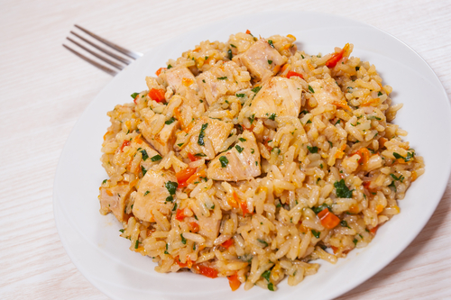
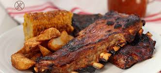
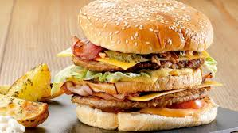
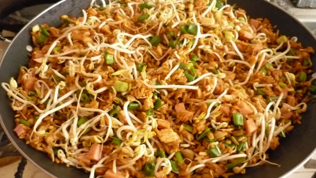
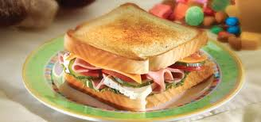
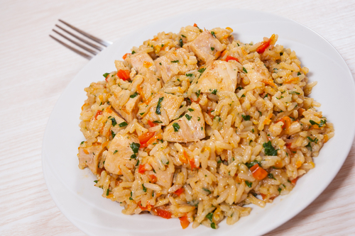
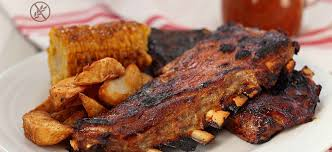
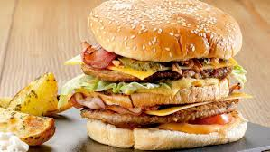
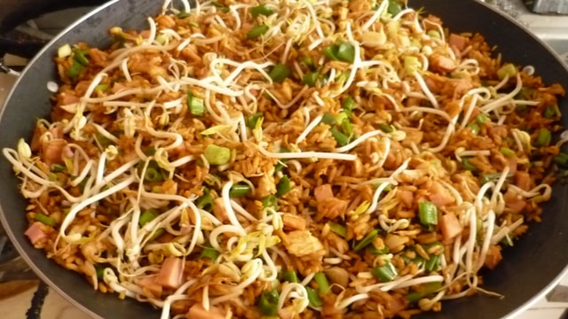
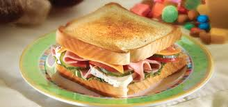

- INCIO
- MI PLATO PERFECTO
- MIS RECETAS
- FAVORITOS
 









- PLATO DEL DIA
- EL MEJOR POSTRE
- REFRESCOS HIDUES
- GASTRONOMIA ARABE
- ORIGEN DEL CEVICHE
- QUE ES SUSHI
- CLASES DE TAMALES
- MEJORES RESTAURANTES
Existen muchas ocaciones en las cuales, un plato especial dara un toque sofisticado y elegante , y hara que el momento sea una experiencia inolvidable, es importante que este de acuerdo a la ocacion, pero ante todo es importante hacer una investigacion sobre los gustos de nuestro comenzal, y de esta manera no correr riesgos que no sea un plato de su agrado ,es mas podemos lograr que tenga varios de los ingredientes o tipos de comida que sea muy agradables para el o ella.
Es increible pero tambien es muy importante estar en un buen estado de animo antes de preparar cualquier tipo de alimento, ya que esto definitivamente afecta de gran manera el plato y el sabor de lo que vayamos a preparar.
Entonces lo mas aconsejable es relajarnos y hacer algo que nos coloque en un estado de armonia y tranquilidad y de esta manera estar dispuesto para la cocina, de seguro nuestros invitados sentirar ese toque especial que es basicamente el amor con el que se preparan los alimentos.